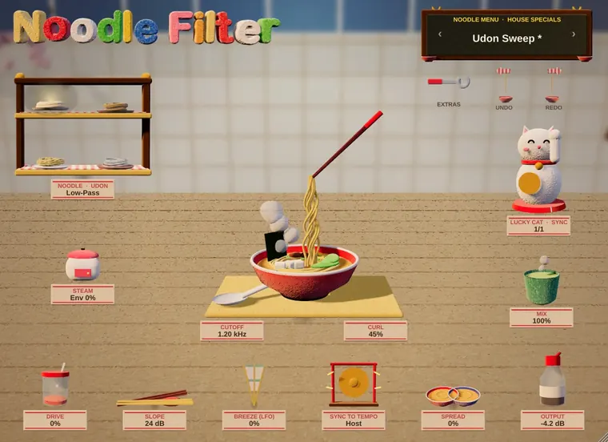

Filter plugin · VST3 · AU · AAX
Noodle Filter
Lift the noodles to open the filter, curl them for resonance.

What is Noodle Filter?
Noodle Filter is a resonant filter plugin lifted by chopsticks. Drag up to open the filter and sideways to curl the noodles for resonance. Choose low-pass, band-pass, high-pass or notch, add an envelope follower or a tempo-synced LFO, and a drop of chilli oil for drive.
What's on the plate
- Chopsticks Cutoff (up) and resonance (sideways)
- Noodle shelf Low-pass, band-pass, high-pass or notch
- Rice cooker Envelope follower
- Lucky cat and paper fan LFO rate and depth
- Gong Sync the LFO to tempo
- Chilli oil Drive
- Chopstick pairs 12 or 24 dB slope
Great for
- Filter sweeps and build-ups
- Auto-wah (band-pass plus steam)
- Rhythmic synced filter movement
Works in your DAW
AU, VST3 and AAX on Mac, VST3 on Windows. Logic Pro, Ableton Live, Pro Tools, FL Studio, Cubase, Studio One, Reaper, Bitwig, GarageBand and more. macOS 11 or later (Apple silicon and Intel), Windows 10 and 11 (64-bit).
- Mac: AU, VST3 and AAX (PACE-signed) · Apple-notarised installer, opens with no warnings
- Windows 10 and 11: VST3 (64-bit)
- Full-screen mode inside the plugin, so the whole kitchen fills your screen
From $19, yours forever with free updates. Or get it with all 16 in the Full Fridge Bundle, Monthly Pass or Breakfast Club.
Black Friday: all 16 plugins for $50 with the Full Fridge (was $100), until 30 November. See the deals
Questions from the breakfast table
What kind of plugin is Noodle Filter?
Noodle Filter is a filter plugin. Lift the noodles to open the filter, curl them for resonance.
Is Noodle Filter a VST3, AU or AAX plugin?
All three: AU, VST3 and AAX on Mac (Apple silicon and Intel), and VST3 on Windows 10 and 11 (64-bit).
Does Noodle Filter work in Logic Pro, Ableton Live and FL Studio?
Yes. Noodle Filter works in Logic Pro, Ableton Live, FL Studio, Cubase, Studio One, Reaper, Bitwig, GarageBand and Pro Tools, and any other DAW that loads AU, VST3 or AAX plugins.
Is there a free trial of Noodle Filter?
Yes. Make a free account and use every feature for 3 days, no card needed. If you buy, the same install unlocks.
How much is Noodle Filter?
From $19, yours forever with free updates. It also comes with all 16 plugins in the Full Fridge Bundle, the Monthly Pass, Breakfast Club and the Lifetime Pass.
Recipes using this plugin: Techno rumble · Lo-fi tape sound · Build-ups and transitions
More from the menu
Orange Crusher distortion · Popping Candy glitch and stutter · Spice Shelf EQ equalizer · Popcorn Sandwich Compressor compressor · Cherry on the Top Mastering mastering · Spaghetti Delay delay · Bread Oven Reverb reverb · Food Fight performance multi-effect · Ghost Pepper Clipper clipper · Hot-o-Pan auto-pan · Gummy Gate gate · Milkshake Chorus chorus · Burnt Toast Tape Machine tape saturation · Muesli Granular granular · Butter Spread stereo widener